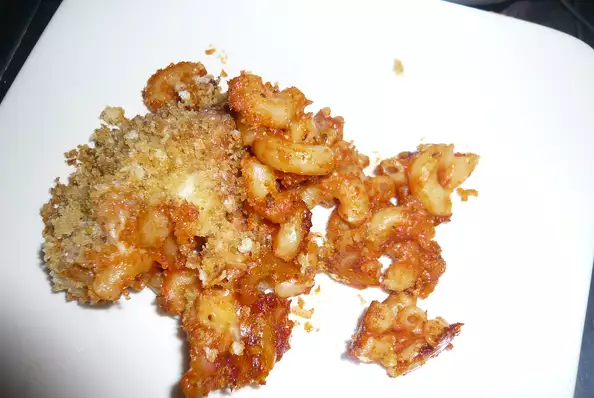

Easy Macaroni and Cheese

Description
This simple three-ingredient macaroni and cheese dish will be a family favorite! It goes great with any
home-cooked meal.
Don't forget to try to spice it up with ingredients like rotel, mushrooms or hamburger meat.
Ingredients
- 1 pound seashell pasta
- 1 (15 ounce) can tomato sauce
- 1 (8 ounce) package processed cheese food, shredded
Steps
- Cook macaroni according to package directions, shortening recommended cooking time by 2 to 3 minutes as
macaroni will continue to bake later in oven. Drain.
- Mix cooked macaroni and tomato sauce in large glass ovenproof dish. Stir in 3/4 of the shredded cheese.
Sprinkle remaining 1/4 of the cheese on top.
- Bake at 350 degrees F (175 degrees C) for 20 minutes.